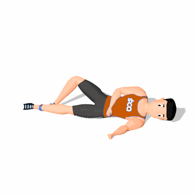

Adutor Unilateral com Faixa Elástica

O exercício trabalha a hipertrofia dos músculos adutores da coxa como também possuí ação estabilizadora e de prevenção de lesões.
Ficha Técnica
Tipo: Funcional
Grupo Muscular: Perna
Aparelho: Nenhum
Músculos: Nenhum
Como realizar
- De barriga para cima, gire um pouco o tronco apoiando uma mão ao solo;
- Deixe uma perna estendida com o mini band entre ela na altura da canela e a outra perna flexionada pressionando o mesmo no solo;
- Em seguida eleve a perna estendida para cima o mais alto que conseguir, mantendo o troco imóvel;
- Retorne à posição inicial de forma controlada com a perna estendida;
- Repita os movimentos, conforme o número de repetições orientado pelo o professor;
- Ao termino das repetições, realize os movimentos com a outra perna.
 RC STORE
RC STORE